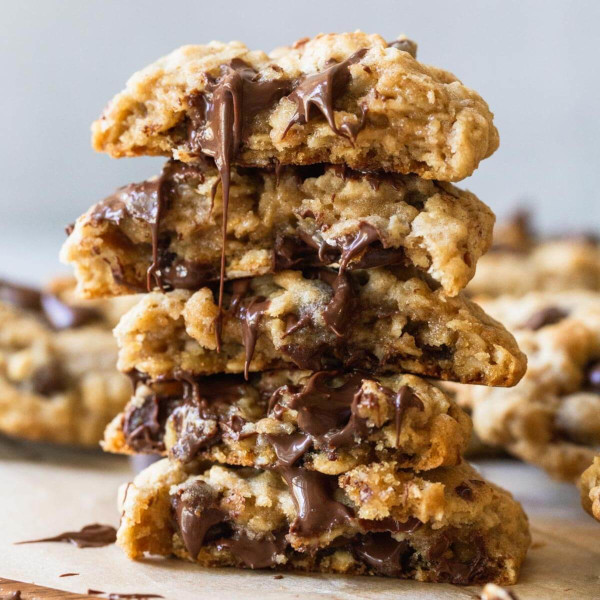

Nana's Oatmeal Cookies

Description
This recipe was a favorite of my Nana's.
Whenever she knew I was visting she would
have a batch cooling and ready for me to devour!
With a rich chewy texture they are perfect
comfort food for those chilly Nova Scotia nights.
Ingredients
- 1 3/4 cups flour
- 2 tsp baking soda
- 1 1/2 cups rolled oats
- 1/2 cup wheat germ
- 1 cup margarine
- 1 1/4 cups brown sugar
- 2 eggs
- 1 tsp vanilla
- 1 cup choclate chips
Method
- Preheat your oven to 350 degrees C
- In a large bowl combine the flour, baking soda, rolled oats and wheat germ
- In a seperate bowl add margarine, eggs, sugar and vanilla and mix until smooth
- Add the margarine mixture to the dry ingredients and fold together
- Add the chocolate chips and mix again
- Form the cookies into balls and spread evenly on a greased baking sheet
- Bake for 8-12 minutes until golden brown. Let them cool and enjoy